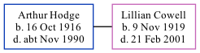

Arthur Wilfred Hodge 1916 - c1990
[ Home ] | [ Calendar ] | [ Surnames Index ] | [ Family History ]Arthur Hodge, the husband of Lillian Ethel Cowell (the fourth cousin once-removed on the mother's side of Nigel Horne), was born in Okehampton, Devon, England on Oct 16, 19161,2. He married Lillian (a leather machinist) in Daventry, Northamptonshire, England around Feb 19413, which is also where he died c. Nov 19902.
Citations
- England & Wales births 1837-2006 - Findmypast
- England & Wales deaths 1837-2007 - Findmypast
- England & Wales marriages 1837-2008 - Findmypast
Media
England & Wales marriages 1837-2008 - BMD/M/1941/1/AZ/000557/018
England & Wales deaths 1837-2007 - BMD/D/1990/11/77912616
England & Wales births 1837-2006 - BMD/B/1916/4/AZ/000615/092
Family Tree
Generated by Ged2Site. Last updated on Jul 20, 2025